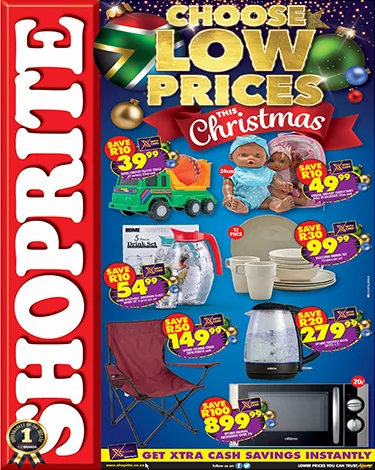
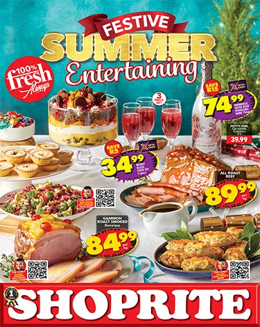
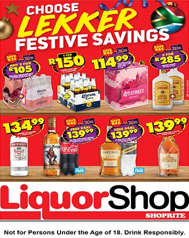
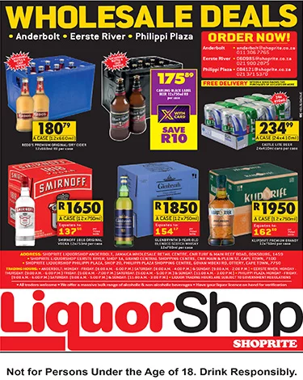
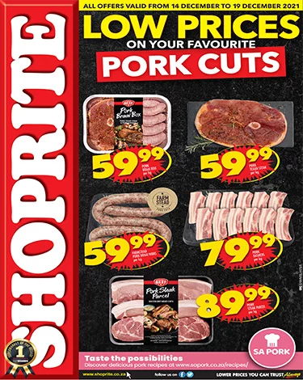
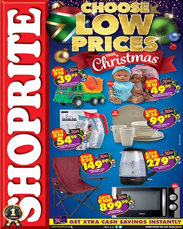
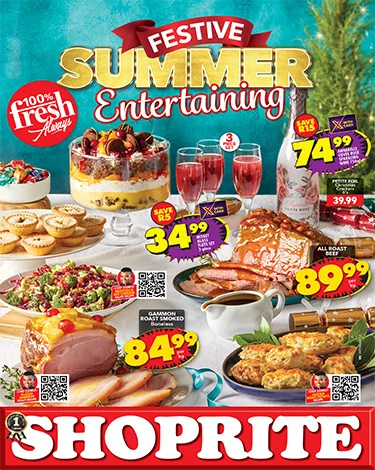
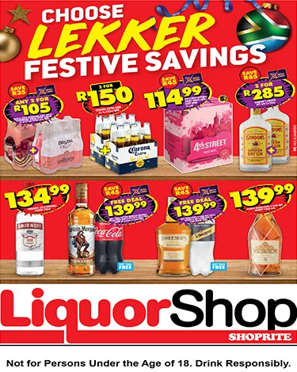
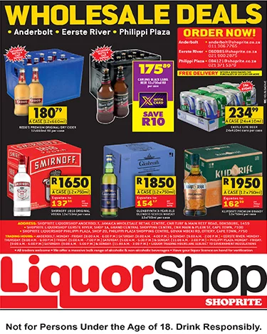
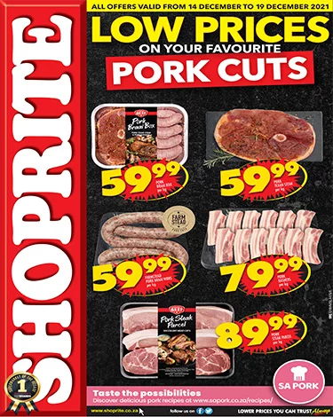

SHOPRITE
Over 40 years ago, Shoprite made a promise to bring the lowest prices in quality food and essential home goods to its customers. This promise is the very foundation of our business and has helped to fuel our growth to becoming Africa’s largest grocery retailer. Today, with over 500 stores and over 20 million loyal shoppers across the continent, the Shoprite group continues to provide communities with a variety of food products, household goods, home appliances and value added services at the lowest possible prices.
Beyond everyday low prices on household essentials, one of our main objectives has been to make shopping a convenient and enjoyable experience for our millions of customers - and thanks to our Money Market services we have been able to do that. Shoprite customers can conveniently pay household accounts, buy prepaid services, send and receive money, buy savings stamps, make travel arrangements and even take care of their personal insurance thanks to this popular service. Selected stores are also complemented by LiquorShops and MediRite Pharmacies for your added convenience.
Our headcount reaches into the hundreds of thousands and increases every year. The group’s commitment to helping small businesses further aids in job security for the thousands who fuel the small to medium business sectors. Our commitment to our employees includes recognition for those who go the extra mile with skills development programmes that help employees grow within the organization. In fact, many of our front of store staff have navigated their careers to become leaders who make important decisions about the future of our company.
Explore our deals
 








